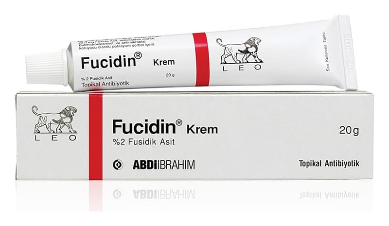

Fucidin % 2 Krem, 20 g

Ne için kullanılır
KT · Bölüm 1FUCİDİN 20g’lık alüminyum tüplerde sunulur. Beyaz renkte, homojen kremdir.
FUCİD İN bir çeşit antibiyotik olan fusidik asit içerir. Enfeksiyonlara neden olan bakterileri öldürerek çalışır. Cildin bakteriler tarafından enfekte olduğu durumları tedavi etmek için kullanılır. Örneğin; • Impetigo (iltihaplı, kabuklu ve şişmiş bir cilt parçası) • Enfekte dermatit (cilt iltihabı) ve lekeler • Enfekte kesik ve sıyrıklar.